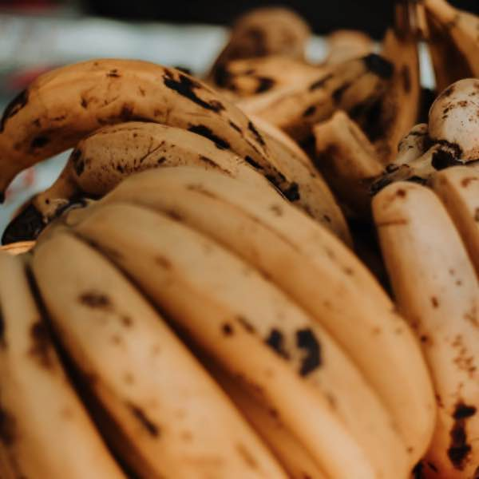
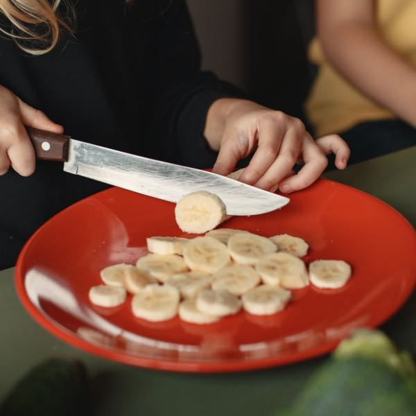
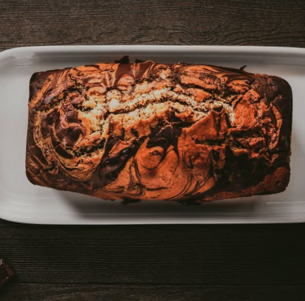

Importante Este tutorial es con fines educativos. No es contenido real.
Ingredientes
- 10 Bananos maduros
- ½ barra de Mantequilla (No margarina)
- 2 tazas de Azúcar o 400 gramos
- 2 tazas de Harina o 280 gramos
- 6 unidades de Huevos
- 1 cucharadita Polvo para hornear
- 1 cucharadita de Esencia de vainilla
- Mucho amor
Pasos a Seguir
Mezclar el banano
Para empezar a realizar la masa de la torta de banano toma un recipiente. Bate el azúcar con la mantequilla. Para que te sea más fácil hacerlo, retira la mantequilla de la nevera 20 minutos antes de empezar. Bate hasta lograr una consistencia suave.
Mezcla con mantequilla
Tritura los plátanos hasta que se haga un puré. Después, vierte este puré en el recipiente donde tienes la mezcla de mantequilla y azúcar. Mezcla todos los ingredientes procesados.
Mezcla con harina
Luego agrega a la masa de la torta de plátano, harina, poco a poco y sin dejar de mezclar. Cuando todo esté unido, añade los polvos para hornear, esencia de vainilla y los 6 huevos, y sigue batiendo hasta que el resultado sea una masa cremosa y suave.
VIERTE EN UN MOLDE
Después, se vierte la mezcla en un molde para horno, previamente enharinado y hornea la torta de banano casera durante una hora a 170ºC. Puede tardar menos tiempo. Es importarte realizar un pinchazo con un cuchillo, si este sale seco, ya la torta está OK para salir.
TRUCO
Es recomendable que precalientes el horno antes de meter la torta.